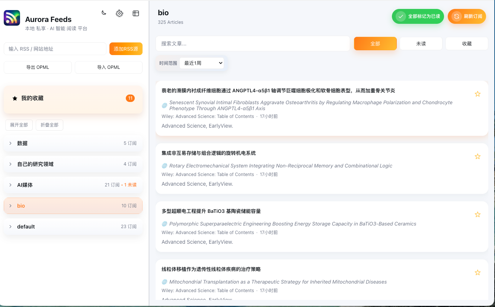
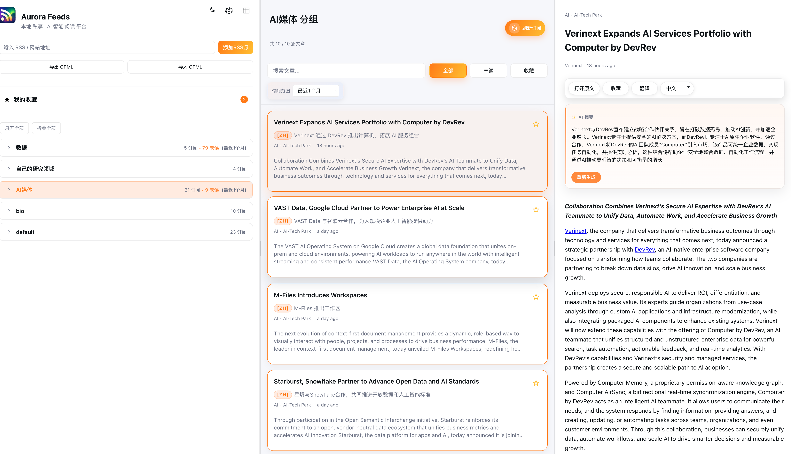
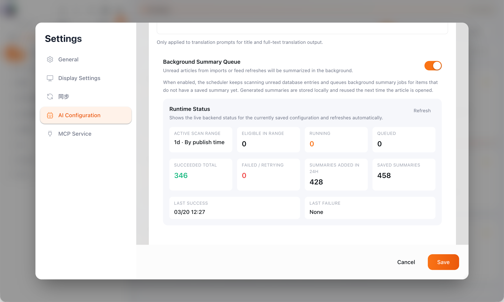
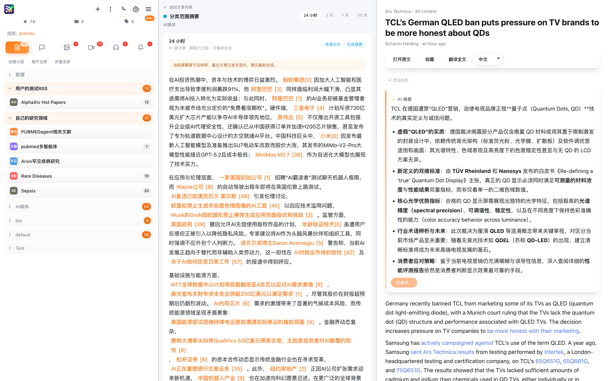
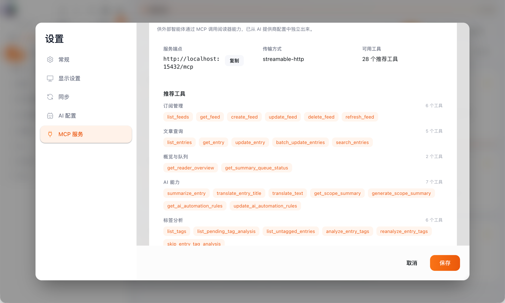
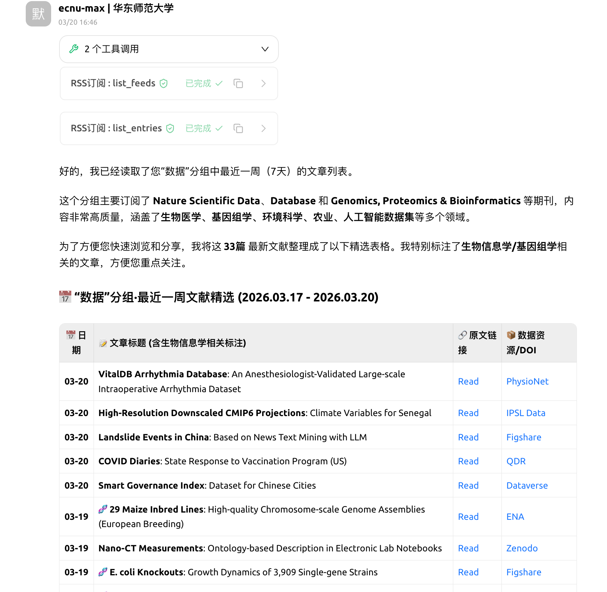

82
GitHub Star，持续迭代中。
面向学习、科研、技术追踪与知识管理场景，提供信息聚合、AI 理解与智能体协同的一体化桌面工作台。
GitHub Star，持续迭代中。
从阅读器升级为信息平台。
覆盖 Windows、macOS、Linux。
支持与智能体协同工作。

在桌面端完成聚合、阅读、摘要、翻译与自动化配置的闭环。
Aurora RSS Reader 面向高频信息获取场景，围绕聚合、理解、整理与自动化构建完整能力体系。
统一接入博客、资讯站点与媒体内容。
通过 AI 摘要与 AI 翻译降低阅读成本。
通过搜索、收藏、分组和日报沉淀内容。
后台摘要队列与日报机制提升效率。
通过 MCP 工具集合支持外部智能体联动。
基于 Electron、Vue 3、Fastify 与 SQLite 构建。
Aurora RSS Reader 重点解决多源内容统一获取、快速理解与持续整理的问题。
博客、资讯站点与媒体内容分散在多个入口，切换成本高。
更新快、篇幅长、语言多样，用户难以快速判断阅读重点。
传统工具偏重展示，难以完成摘要、筛选和整理等后续处理。
适用于学生、研究者、开发者及长期进行信息跟踪与知识整理的个人用户。
项目目标是让用户更高效地获取信息、理解信息并管理信息。

将内容聚合、阅读、翻译和摘要提炼直接整合在同一工作台中，让用户更快理解文章重点。
支持订阅分组、收藏管理和结构化组织，让多源内容更易梳理。
帮助用户在大量内容中快速定位真正有价值的信息。
降低长文与多语种内容门槛，让信息处理更高效。
让高频内容形成可回顾、可积累、可复用的知识资产。
项目围绕聚合阅读、内容理解、信息整理与自动化管理构建完整闭环。

支持未读文章进入本地摘要队列，后台持续处理并保留结果。

将高频更新内容压缩为结构化日报，便于快速浏览与回顾。
AI 能力被直接嵌入阅读流程，用于提炼重点、降低理解门槛并提升持续使用效率。
Aurora RSS Reader 同时面向用户使用与智能体调用，兼具产品属性与平台属性。
通过 MCP 工具集合，项目可将订阅管理、检索、摘要与标签分析能力提供给智能体调用。
桌面端体验、跨平台分发与本地数据积累能力兼顾。

将工具能力显式化和结构化，便于用户理解，也便于智能体接入与调用。

与 Claude Code、OpenClaw 等智能体协同时，可支持信息检索、摘要、分析与自动整理。
Aurora RSS Reader 回应了数字时代信息处理效率低的问题，也展示了 AI 与 MCP 在桌面工具中的真实应用价值。
适用场景：课程学习、科研追踪、技术资讯订阅、行业监测、个人知识管理。
提升数字环境中的信息获取能力、处理能力和应用能力。
从单纯的工具使用走向人与智能体协同的信息处理方式。
谢谢观看
华东师范大学第三届全民数字素养与人工智能创新应用大赛 · Aurora RSS Reader 项目展示